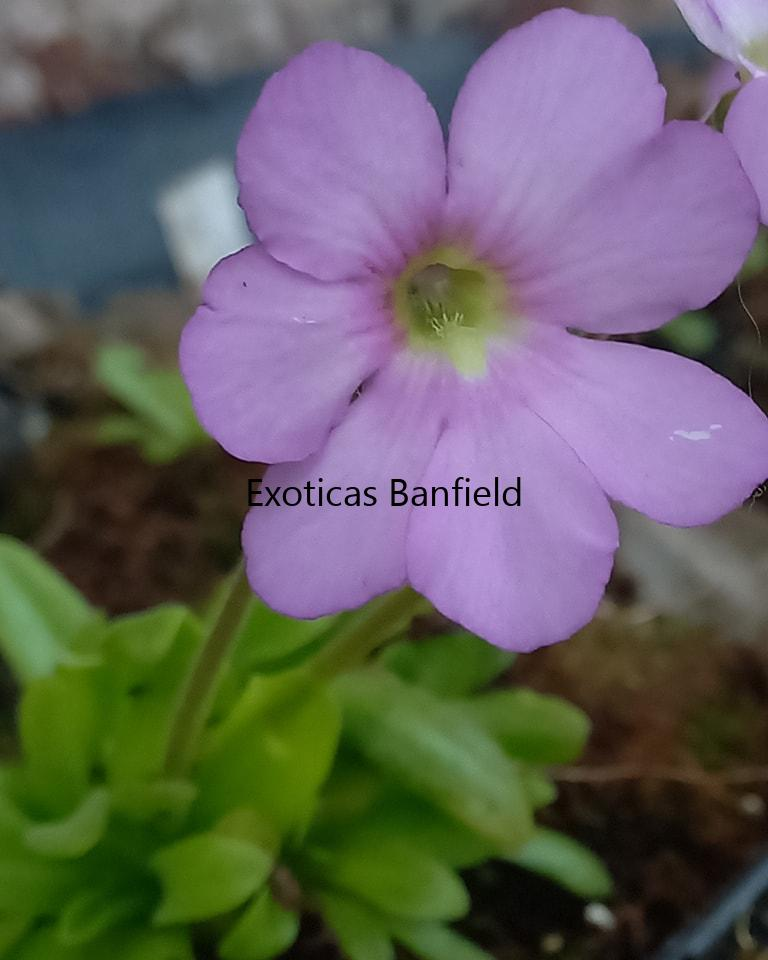
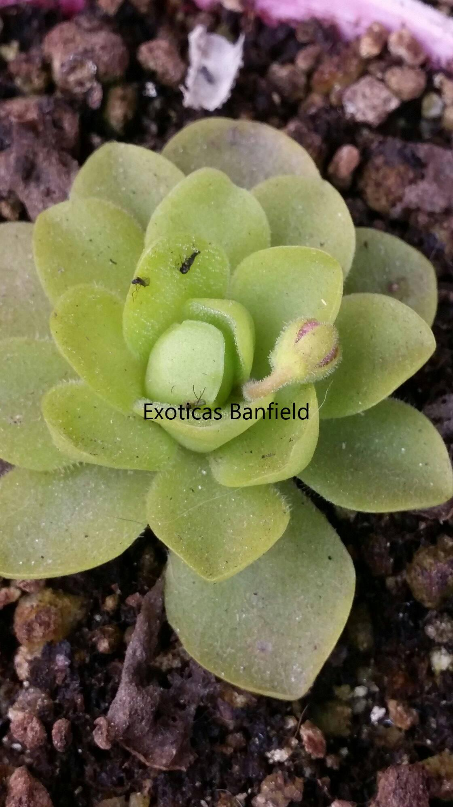
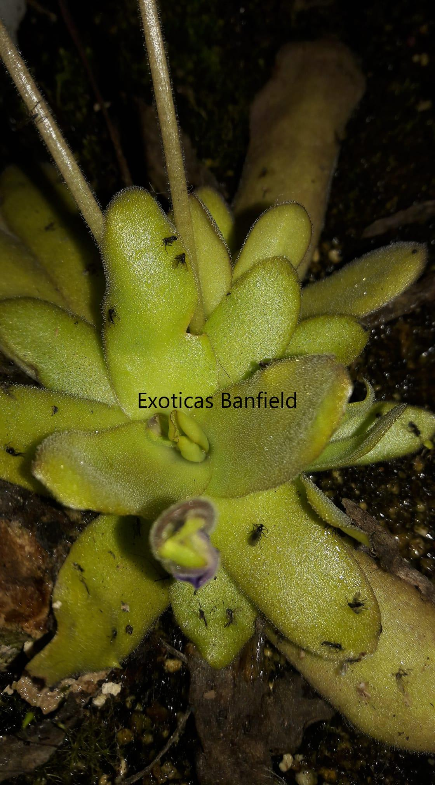

Pinguicula
Hábitat Natural
Ubicación: Se encuentran en diversas partes del mundo, incluso en Argentina. México concentra la mayor diversidad de especies.
Entorno: Crecen en ambientes húmedos y pantanosos, en áreas de alta montaña o sobre rocas y musgo. Algunas especies toleran condiciones epífitas o suelos pobres y bien drenados.
Descripción
Plantas con hojas suculentas dispuestas en roseta. Las hojas carnívoras secretan mucílago pegajoso que atrae y captura insectos.
Forma: Poseen hojas carnívoras y no carnívoras según la época del año; la roseta se adapta al ciclo estacional.
Tamaño
Tamaño máximo: Generalmente rosetas de hasta 10 cm de diámetro. La Pinguicula gigantea puede superar los 25 cm.
Método de Captura - Pasivo
Mecanismo: Las hojas secretan un mucílago pegajoso que atrapa insectos. Glándulas digestivas liberan enzimas que descomponen a la presa y permiten la absorción de nutrientes.
Temperatura
Rango natural: Especies tropicales entre 15°C y 30°C; especies templadas toleran hasta 0°C en invierno. Lo ideal durante crecimiento es 20°C a 25°C.
Tolerancia: Hasta 35°C con cuidado. Evitar exposición prolongada al calor extremo.
Humedad
Nivel de humedad: Entre 50% y 70%. Humedad excesiva o ventilación deficiente puede provocar pudrición. Controlar riego y ventilación.
Riego
Agua: Solo destilada o de lluvia. Mantener bandeja con 1–2 cm de agua en macetas pequeñas; ajustar según tamaño. Evitar encharcar.
Primavera/Verano: Mantener sustrato húmedo. No dejar secar por completo.
Otoño/Invierno: Riego moderado, observando que el sustrato no se encharque ni se seque completamente.
Floración
Ciclo: Florece desde primavera hasta principios de invierno, según condiciones.
Flores: Mayormente rosadas, también blancas, azules o amarillas, simples y vistosas.
Trasplantes
Época: Preferentemente a comienzos de primavera, aunque se puede realizar todo el año.
Motivo: Maceta pequeña o sustrato agotado; permite un entorno más estable para raíces.
Iluminación
Exterior: Luz brillante indirecta. Puede tolerar algo de sol directo con cuidado.
Interior: Junto a ventana bien iluminada; complementar con luz artificial si es necesario.
Sustrato
Requerimientos: Ácido, poroso y sin nutrientes. Mezcla habitual: turba rubia + perlita (50/50 a 70/30).
Opcional: Añadir vermiculita, arena de sílice o piedra pómez para mejorar aireación y drenaje.
Hibernación
Especies tropicales no hibernan. Especies templadas entran en reposo invernal, formando roseta compacta con hojas no carnívoras.
Hojas no carnívoras: Otoño-invierno, hojas reducidas; vuelven a carnívoras al crecer condiciones favorables.
Alimentación
Capturan insectos pequeños, generalmente mosquitos o moscas de la fruta. No requieren alimentación manual, aunque se puede complementar si se desea.

Flor de Pinguicula Gigantea Alba x Moctezumae

Pinguicula x Sethos en roseta de invierno

Pinguicula x Afrodita